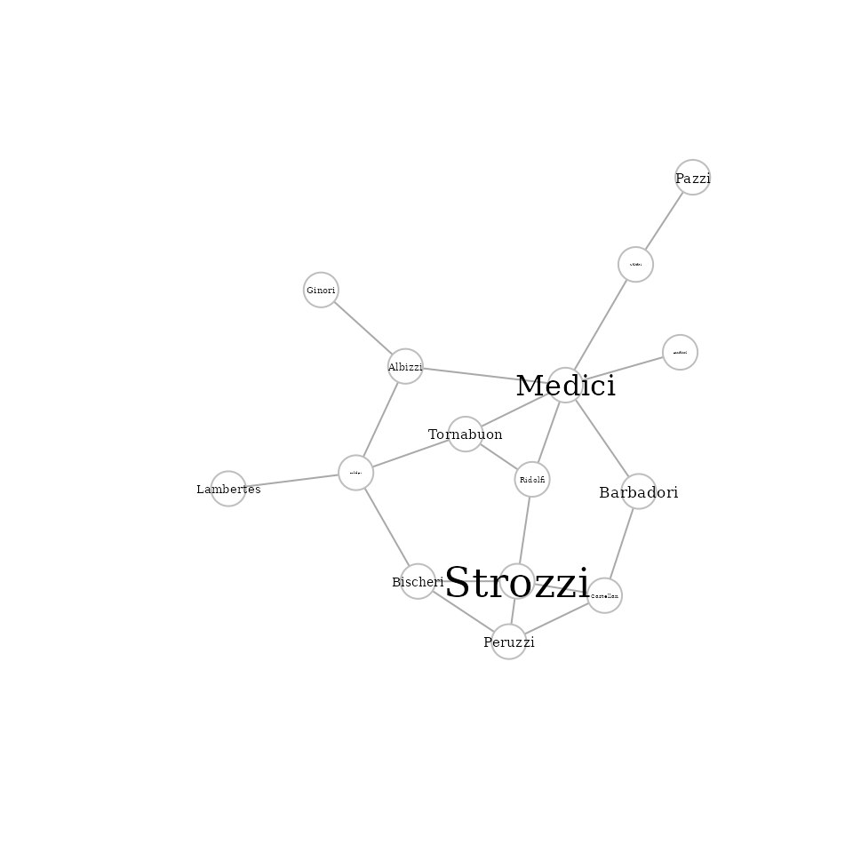
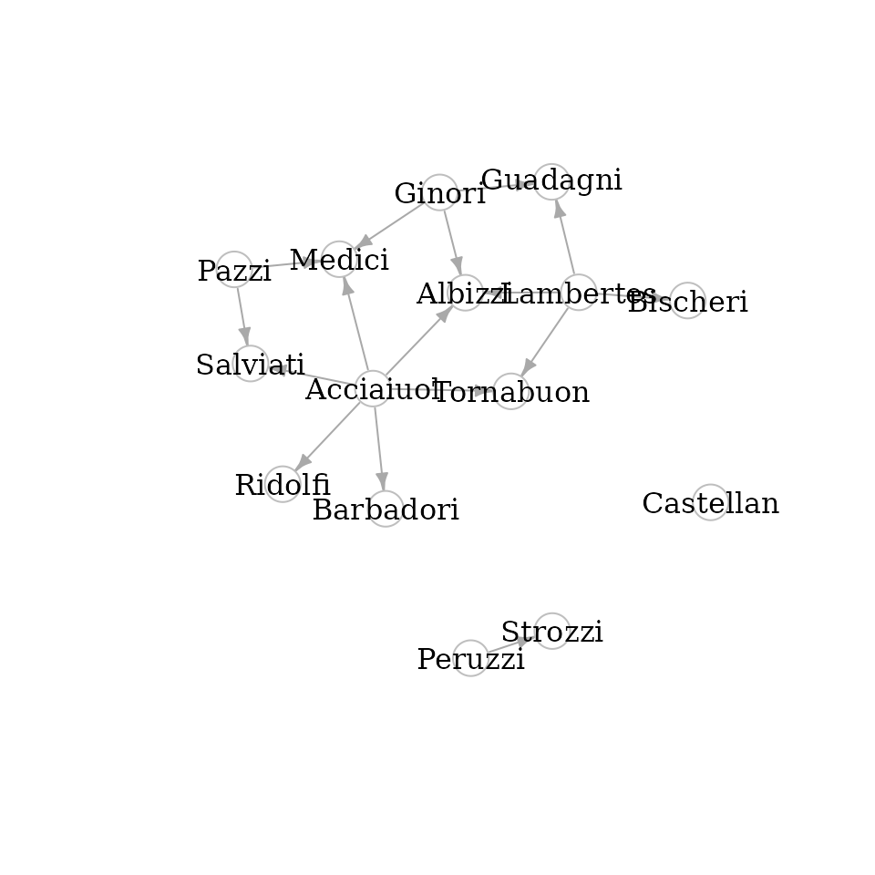

This vignette describes a typical use case of the
netrankr package. It contrasts the usual centrality
analysis based on indices with the dominance based assessment. It is
advisable to read the other vignettes before going through this
example.
Data
For this tutorial, we use the famous florentine families
dataset (Padget & Ansell, 1993). The marriage links of families
together with the wealth attribute are included in the
netrankr package.
data("florentine_m")
# Delete Pucci family (isolated)
florentine_m <- delete_vertices(florentine_m, which(degree(florentine_m) == 0))## This graph was created by an old(er) igraph version.
## Call upgrade_graph() on it to use with the current igraph version
## For now we convert it on the fly...
# plot the graph (label size proportional to wealth)
set.seed(111)
plot(florentine_m,
vertex.label.cex = V(florentine_m)$wealth * 0.01,
vertex.label.color = "black",
vertex.color = "white",
vertex.frame.color = "gray"
)
We use this dataset below to illustrate how a dominance based assessment of centrality offers an alternative approach to centrality in two ways:
- Are the Medici universally the most central family?
- Using centrality as explanatory variable (Can centrality explain the wealth attribute?)
Most central family (Index approach)
The network is often used to benchmark new centrality indices. The premise is that the Medici should always emerge as one of the most central once (if not the most central).
We start by applying some of the standard centrality indices given in
the igraph package.
cent.df <- data.frame(
degree = degree(florentine_m),
betweenness = betweenness(florentine_m),
closeness = closeness(florentine_m),
eigenvector = eigen_centrality(florentine_m)$vector,
subgraph = subgraph_centrality(florentine_m)
)
# most central family according to the 5 indices
V(florentine_m)$name[apply(cent.df, 2, which.max)]## [1] "Medici" "Medici" "Medici" "Medici" "Medici"In all cases, the Medici are considered to be the most central
family. However, it is possible to find indices that rank other families
on top. An example is odd subgraph centrality, which can be
assembled with the netrankr package.
# odd subgraph centrality
sc_odd <- florentine_m %>%
indirect_relations(type = "walks", FUN = walks_exp_odd) %>%
aggregate_positions(type = "self")
# family with highest score
V(florentine_m)$name[which.max(sc_odd)]## [1] "Strozzi"In this example, the Strozzi family are considered to be the most central family and the Medici are ranked third.
Although we have found \(5\) indices that consider the Medici the most central family, we can not guarantee, that there do not exist hundreds (or thousands?) of indices that would give an entirely different result.
Most central family (Dominance approach)
We start by calculating the neighborhood-inclusion preorder, the most general requirement for any centrality index.
P <- neighborhood_inclusion(florentine_m)With the function comparable_pairs() we can assess how
many pairs of families are already ordered, before applying any
index.
## [1] 0.152381Only around 15% of pairs of families are comparable, leaving 85% of pairs of families that could be ordered (basically) arbitrarily.
If we want to visually assess the dominance relations we can use the
function dominance_graph().
d <- dominance_graph(P)
V(d)$name <- V(florentine_m)$name
set.seed(113)
plot(d,
vertex.label.color = "black",
vertex.color = "white",
vertex.frame.color = "gray",
edge.arrow.size = 0.5
)
The Castellan family neither dominates nor is dominated by any other family. This means, that we can find indices that potentially rank them on top or on the bottom, or anything in between.
To better assess the potential ranks of nodes, we can plot the rank intervals
plot(rank_intervals(P))Observe how big the intervals are, indicating that there is ample
scope to rank the families differently. These intervals, however, only
give us a rough estimate of this arbitrariness and not any rank
probabilities. To get all exact probabilities, we use the function
exact_rank_prob().
res <- exact_rank_prob(P)There are 3,972,630,480 different possibilities to rank the families!
(the value is stored in res$lin.ext. ). This means
that theoretically, we can find almost 4 Billion indices that rank the
families differently.
The rank probabilities of families can be found in
res$rank.prob. They are returned as a matrix where rows are
families and columns are ranks. That is, an entry in row \(u\) and column \(k\) gives the probability that \(u\) has rank \(k\) (larger \(k\) indicate higher ranks) Mostly, you will
be interested in the probability to be the most central node of a
network. Below, we calculate these probability for all families and
return the one’s that have a higher probability than \(0.1\).
top_rank_prob <- res$rank.prob[, 15]
names(top_rank_prob) <- V(florentine_m)$name
round(top_rank_prob[top_rank_prob > 0.1], 3)## Albizzi Guadagni Medici Salviati Strozzi
## 0.109 0.106 0.123 0.111 0.133The Strozzi family, with \(0.13\), has the highest probability to be top ranked, followed by the Medici with \(0.12\).
If we are only interested in a subset of nodes, in our case maybe the
Strozzi and Medici, we can assess the relative rank
probabilities in res$relative.rank. Again,
probabilities are returned as matrix objects, where an entry in row
\(u\) and column \(v\) gives the probability that \(u\) is ranked below \(v\). Below we calculate this probability
for the Strozzi and Medici.
id_strozzi <- which(V(florentine_m)$name == "Strozzi")
id_medici <- which(V(florentine_m)$name == "Medici")
res$relative.rank[id_strozzi, id_medici]## [1] 0.5219845The probability that the Strozzi are less central than the Medici is 0.52 and thus very close to a “fifty-fifty” chance.
The last result of interest returned by
exact_rank_prob() are the expected ranks in
res$expected.rank. The expected ranks, as the name
indicates, returns the ranks that we expect families to have in a
centrality ranking.
| Name | Expected |
|---|---|
| Medici | 11.09 |
| Albizzi | 10.72 |
| Strozzi | 10.67 |
| Salviati | 10.60 |
| Guadagni | 10.51 |
| Tornabuon | 10.11 |
| Bischeri | 9.64 |
| Barbadori | 9.37 |
| Ridolfi | 9.37 |
| Castellan | 8.00 |
| Peruzzi | 5.33 |
| Pazzi | 4.54 |
| Ginori | 4.01 |
| Lambertes | 3.28 |
| Acciaiuol | 2.74 |
Although the Strozzi have a higher probability to be the most central family, over all we still expect the Medici to be the most central.
This very general assessment gives us a general idea of the scope of potential centrality analyses. The more possible rankings we have (as in this case!) the more unreliable an index driven approach can be. We will explore this in more detail in the following section.
Centrality as explanatory variable (Index approach)
Usually, we are not simply interested in a ranking of nodes, but we rather would like to use centrality to explain certain node attributes. In our case, we might be interested in the question: “can an index explain the wealth of families?”, or if we already have a more concrete idea “can proximity to other families explain the wealth attribute?”
“Proximity” can be translated to the graph-theoretic concept of
shortest path distances, such that closeness centrality would be an
adequate candidate as an index. We here use the pipeline approach of the
netrankr package instead of the closeness()
function of igraph. The reasons will become evident in the
next section.
# Closeness
c_C <- florentine_m %>%
indirect_relations(type = "dist_sp") %>%
aggregate_positions(type = "invsum")
cor(c_C, V(florentine_m)$wealth, method = "kendall")## [1] 0.08823953The correlation between closeness and wealth (0.0882) is far to low to constitute that “proximity” is related to wealth. However, there exist various other indices, that are based on the shortest path distances in a graph. Refer to the literature for more details on these indices.
# harmonic closeness
c_HC <- florentine_m %>%
indirect_relations(type = "dist_sp", FUN = dist_inv) %>%
aggregate_positions(type = "sum")
# residual closeness (Dangalchev,2006)
c_RC <- florentine_m %>%
indirect_relations(type = "dist_sp", FUN = dist_2pow) %>%
aggregate_positions(type = "sum")
# integration centrality (Valente & Foreman, 1998)
dist_integration <- function(x) {
x <- 1 - (x - 1) / max(x)
}
c_IN <- florentine_m %>%
indirect_relations(type = "dist_sp", FUN = dist_integration) %>%
aggregate_positions(type = "sum")
c(
cor(c_HC, V(florentine_m)$wealth, method = "kendall"),
cor(c_RC, V(florentine_m)$wealth, method = "kendall"),
cor(c_IN, V(florentine_m)$wealth, method = "kendall")
)## [1] 0.09756214 0.11594338 0.08823953The highest correlation (0.1159) is achieved for residual closeness, however, this is still too low to conclude that proximity is related to wealth.
Besides the already considered indices, there exist further one’s that include a free parameter. The idea is that the parameter can be tuned to maximize the correlation between the index and the attribute under consideration. Again, the mathematical details can be found in the respective literature.
# generalized closeness (Agneessens et al.,2017) (alpha>0) sum(dist^-alpha)
alpha <- c(seq(0.01, 0.99, 0.01), seq(1, 10, 0.1))
scores <-
sapply(alpha, function(x) {
florentine_m %>%
indirect_relations(type = "dist_sp", FUN = dist_dpow, alpha = x) %>%
aggregate_positions(type = "sum")
})
cors_gc <- apply(
scores, 2,
function(x) cor(x, V(florentine_m)$wealth, method = "kendall")
)
res_gc <- c(max(cors_gc), alpha[which.max(cors_gc)])
# decay centrality (Jackson, 2010) (alpha in [0,1]) sum(alpha^dist)
alpha <- seq(0.01, 0.99, 0.01)
scores <-
sapply(alpha, function(x) {
florentine_m %>%
indirect_relations(type = "dist_sp", FUN = dist_powd, alpha = x) %>%
aggregate_positions(type = "sum")
})
cors_dc <- apply(
scores, 2,
function(x) cor(x, V(florentine_m)$wealth, method = "kendall")
)
res_dc <- c(max(cors_dc), alpha[which.max(cors_dc)])The highest correlation for generalized closeness is 0.1159434 achieved for \(\alpha\)= 0.51
The highest correlation for decay centrality is 0.1159434 achieved for \(\alpha\)=0.26
We could know accept that there is no index based on shortest path distances that could explain wealth. Or, we could start to craft new indices that might yield a better correlation with wealth. However, we then enter the dilemma that was mentioned at the end of the last section. If we find one, we can not be certain that there might not even be a better one out there. In contrast, if we do not succeed, we can not guarantee that there does not exist an index with a higher correlation.
Centrality as explanatory variable (Dominance approach)
Since we are postulating a connection between proximity and wealth, we compute the pairwise shortest path distances as our indirect relation of interest and calculate the positional dominance relations.
D <- florentine_m %>%
indirect_relations(type = "dist_sp") %>%
positional_dominance(benefit = F)
comparable_pairs(D)## [1] 0.152381Note that exactly the same pairs are comparable as for neighborhood-inclusion. However, with one additional assumption, we will be able to increase the number of comparable pairs significantly (and thus reduce the space of potential rankings). By summing up distances in various ways, as done by the indices above, we assume families to be homogeneous. It doesn’t matter to whom we have a small distance, it just matters that they are small.
If we can safely comply with this assumption, we can use positional dominance under total homogeneity. It is important to note, that if a family is dominated by another under this premise, it will have a lower score in any distance based centrality index.
D <- florentine_m %>%
indirect_relations(type = "dist_sp") %>%
positional_dominance(benefit = F, map = T)
comparable_pairs(D)## [1] 0.8190476The number of comparable pairs increased from \(0.15\) to \(0.82\), thus reducing the space of potential centrality rankings based on distances significantly.
We proceed to explore if there is potential for a distance based ranking to explain wealth perfectly. This is only possible, if families with lower wealth do not dominate wealthier family. Otherwise they would always be ranked higher, prohibiting a perfect correlation.
The figure below shows the dominance relations as a directed graph, where the x coordinate of nodes is proportional to the wealth attribute and the y coordinate to the number of dominated families. Any edge pointing to the left (shown in red) denotes a pair of “wrongly” ordered families, i.e. a wealthy family is dominated by a less wealthy one.

In total, we find \(41\) such pairs (\(39\)% of all pairs). This implies that we are (potentially) quite far from being able to explain wealth perfectly with shortest path distances. In the following we will explore how far away.
We start by calculating the rank intervals to illustrate the difference to neighborhood-inclusion.
plot(rank_intervals(D))All intervals shrunk significantly and even correspond to a single point for two families (Pazzi and Medici). This implies that no matter which distance based index we use, the Pazzi family will always be ranked last and the Medici always on top.
For a more exact assessment we again use the function
exact_rank_prob().
res <- exact_rank_prob(D)In total, there are 654 distance based rankings possible. This is a huge reduction from the general case where almost \(4\) billion are possible.
To determine the best possible correlation between wealth and any
distance based ranking, we first need to determine all 654 rankings. For
this purpose, we rerun the previous analysis with
only.results=FALSE to obtain the necessary data
structure.
res <- exact_rank_prob(D, only.results = FALSE)Now, we can use the function get_rankings() which
returns all rankings as a matrix.
all_ranks <- get_rankings(res)
dim(all_ranks)## [1] 15 654No we can simply loop over all rankings and calculate the correlation between the ranking and the wealth attribute.
dist_cor <- apply(
all_ranks, 2,
function(x) cor(V(florentine_m)$wealth, x, method = "kendall")
)
c(max_cor = max(dist_cor), mean_cor = mean(dist_cor))## max_cor mean_cor
## 0.15459118 0.04600506The highest achievable correlation is 0.1546.
We can conclude, that there can not be any distance based centrality index that can reasonably explain the wealth attribute.
We can additionally consider the correlation between degree and wealth, calculated below.
## [1] 0.1958605The correlation is higher than any distance based index can have. Thus, we can additionally conclude that marriage ties are more indicative for wealth than proximity in the marriage network.